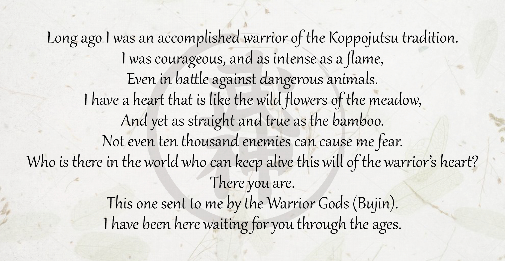

Toshitsugu Takamatsu

Toshitsugu Takamatsu was born in the 23rd year of Meiji (March 10, 1887) in Akashi, Hyogo province. His given name was Hisatsugu but he later changed it to Toshitsugu. The Takamatsu family originated from Matsugashima in Ise. It is believed that at some point in their family history the Takamatsu's had been Daimyo of this area and owned the Hosokiubi Castle. Takamatsu was given a makimono scroll called Amatsu Tatara. This scroll connected the Takamatsu family with the Kuki family. (The Kuki family are heirs to Kukishin Ryû). Takamatsu's Grandfather was Toda Shinryuken Masamitsu. He had a bone clinic and a Budo Dojo in Kobe. His grandfather was of Samurai rank and Soke of Shindenfudo Ryû and a direct descendent of Tozawa Hakuunsai, the original founder of Gyokko Ryû Kosshijutsu.
Takamatsu's father sent him to train with Toda because Toshitsugu was weak as a child. His classmates would often pick on him until he cried. They would call him "cry baby" and Takamatsu's father thought martial arts would be good to make him strong and give him self-confidence. During his first year of training he was taught nothing, instead he was thrown around by the other students continuously. He would bleed from the elbows and knees. Nobody would comfort him, they would just continue to throw him around the dojo. But every night he came back for more.
After a year of this hard conditioning he was taught his first techniques. In those days it was usual for the senior student to teach the beginners, but in Takamatsu's case he was taught directly by his grandfather Toda. By the age of thirteen he had mastered the techniques of Shindenfudo Ryû. Later he learned the schools of Gyokko Ryû, Koto Ryû, Togakure Ryû, Gyokushin Ryû, and Kumogakure Ryû from Toda Sensei. He was fond of Koto Ryû but at first had little interest in Togakure Ryû since most of his early training in the art consisted of running up a 2.5-inch board, fixed to the dojo wall at a sharp angle Eventually he could run up at nearly a 90-degree angle. Koto Ryû training involved strong conditioning of the hands and feet, especially the fingers and toes. For conditioning a student would strike small pebbles with the fingertips. As the student progressed he would later move on to rocks and other hard objects. Takamatsu said his nails and fingers would run with blood, and cause great pain. As a result of constant striking of rocks and hard objects, Takamatsu's finger nails were 4 to 5 millimeters thick. He could not cut them with nail cutters. It is said he could tear the bark off of a tree with a simple sweep of his hand.
When Takamatsu was 17 years old a famous martial artist named Ishitani Takeoi came to work at the match factory owned by Takamatsu's father. Ishitani's ancestors were related to the Takamatsu family. Ishitani was given a small area of the factory to use as a dojo where Takamatsu was able to study under the old man. From Ishitani he was taught Kukishinden Ryû Happo Biken no Jutsu, Hon Tai Takagi Yoshin Ryû and Gikan Ryû Koppojutsu. Before Ishitani's death he passed the scrolls of these Ryû on to Toshitsugu.
Takamatsu received his Menkyo Kaiden from Toda Sensei for the remaining schools in 1909 when he was 22 years old. Toda died that same year. He once told Takamatsu, "Even when you are faced with death, die laughing". A short time after Toda's death Takamatsu left for China.
Takamatsu's time in China was a dangerous part of his life. One of the reasons he gave for leaving was that he wished to test his training, and as this was no longer possible in Japan, he left for China to work for the many warring warlords that dotted China. Over the next 10 years Toshitsugu made several trips to China and abroad when he was young. There are countless stories of his adventures and martial prowess. Takamatsu once said he fought 12 "official" fights to the death (the result of challenges) and 7 competitive matches.
While in China Takamatsu studied various martial arts later mastering up to eighteen Chinese and Korean arts. Eventually Takamatsu began teaching martial arts in China where he became the chairman of the Japanese Association of Young Martial Artists. Takamatsu at one point had over 800 students, this led to more challenges from other senior martial artists. He fought every challenger and never lost a single fight. In1919 Takamatsu returned to Japan now in his early 30's. For a time he became a priest at the Tendai temple on Mt. Hiei in Kyoto later becoming one of the abbots of the temple. He later would leave the temple saying that he was not a religious person though he was very much attuned to the spiritual. Its been speculated that he was ordained in a total of three different religions. He said that at his time in the temple he would often pray for the people that he had killed and once said that he had made lots of mistakes in his youth. In his later years Takamatsu ran a small tea house and hotel in Kashiwara, Nara Japan.
In the 1950's Takamatsu took a new student named Yoshiaki Hatsumi, then in his 20's. Hatsumi had been studying Kobudo under a teacher named Ueno, who had told him that there was nothing more he could teach. Hatsumi already held dan grades in the more common arts, such as Karate, Aikido, and a 4th Dan in Judo. Takamatsu had once commented on Judo saying that the first time he saw it, he was horrified. This was because they bent their backs when executing techniques.
Hatsumi trained with Takamatsu every weekend for 15 years. Hatsumi said that when he first met Takamatsu he was frightened of him, saying he was a very powerful and frightening teacher. When training with Takamatsu there was never any warm up. Even when they would use real swords, the same attitude was taken. In a real fight you may never have time to warm up; it could be sudden, and the body may be cold. This harsh training would continue until the end of Takamatsu's life.
One year before his death, Takamatsu told Hatsumi that he had taught him everything that he knew. Takamatsu Sensei died April 2nd 1972 at the age of 85. Of all the martial arts he had studied Takamatsu was known in Japan only for the Kukishinden Ryû. It is said that when he died, his neighbors were shocked to read in his obituary that he was, in fact, also a Grandmaster of the last and most ancient schools of Ninjutsu, the Togakure Ryû. Takamatsu once sent Hatsumi this poem:

For more on the life and countless battles of Toshitsugu Takamatsu, please read:
Essence of Ninjutsu by Masaaki Hatsumi.